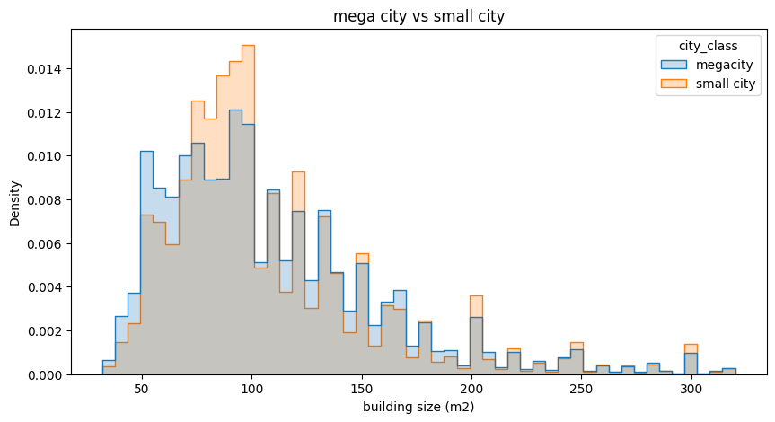
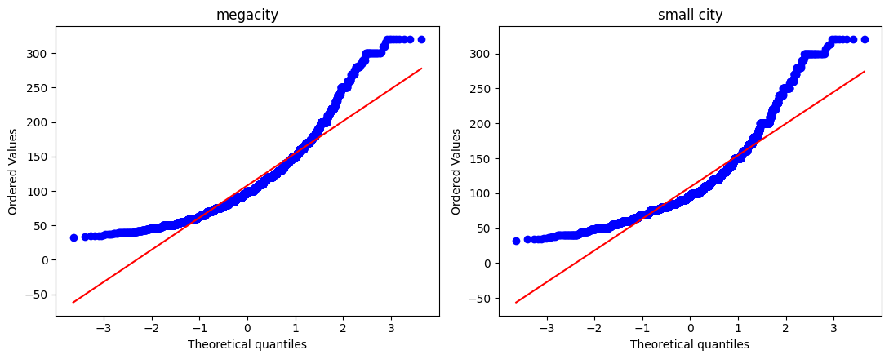

Hypothesis tests
Four common beliefs about the housing market, tested on the data. With hundreds of thousands of rows almost any difference is "significant", so each test reports how large the effect is (Cohen's d, price ratio) alongside the p-value, and repeats the test inside each property type.
Test toolbox
Every test in this section uses the same set of methods.
Welch's t-test
Compares two means without assuming equal variances. Levene's test rejected equal variances (p = 0.0099). The central limit theorem keeps the test valid at this sample size.
Mann-Whitney U
A rank-based backup. It asks whether a random value from one group tends to be larger than one from the other, and it is robust to skew and outliers.
Cohen's d
The size of the effect in standard deviations. Rough guide: 0.2 is small, 0.5 medium, 0.8 large. It tells us whether a significant result matters in practice.
Shapiro + Q-Q plot
Shapiro rejects normality for any tiny deviation once samples are large. The Q-Q plot shows how far from normal the data is, and where.
Are homes in megacities smaller than in small cities?
H0: mean(megacity) ≥ mean(small city) vs H1: mean(megacity) < mean(small city), a one-sided test.
Residential ads only (land excluded), joined with the city classification. 661,045 ads after cleaning.
Overall result
| Group | Mean m² | Median | n |
|---|---|---|---|
| Megacity | 108.15 | 100 | 347,389 |
| Small city | 108.94 | 97 | 313,656 |
Both tests reject H0, but the means differ by less than one metre. The tiny p-value reflects the sample size, not a meaningful difference.
Simpson's paradox simulator
The two groups contain different mixes of apartments and villas. Pick the property mix to apply to both groups and watch the comparison change direction.
Mean size within each property type


Why a tiny effect gets a tiny p-value
For a two-sample test, z ≈ d · √(n/2). Move the sliders to see how sample size alone turns a negligible difference into a "highly significant" one.
p-value against sample size for the chosen effect
"Old homes were roomier" (built before 1396)
H0: mean(old) ≤ mean(new) vs H1: mean(old) > mean(new), one-sided.
First version (Amin)
Ran on all ads, including land, commercial and industrial property. The raw means came out at 2,758 and 3,278 m², a sign of sizes like 10,000,000 m².
Old vs new: filtered means
Completed version
- Only residential ads (sale + rent, land excluded), because the claim is about homes.
- The same cleaning as H1: one IQR fence on log(size), shared by both groups.
- Welch + Mann-Whitney + Cohen's d, then the same test within each property type to separate the property-mix effect.
Newer homes are, if anything, larger. The data does not support "old homes were roomier".
Is a business deed linked to the price of commercial property?
H0: mean(price | deed) = mean(price | no deed), two-sided.
Three problems in the first version, and the fixes
| First version | Rewritten version |
|---|---|
| Compared all ads | Only commercial-sell, which is what the question asks about |
| Filled missing prices with the city median, adding thousands of identical fake values | Uses recorded prices only |
| "p < α, so H0 is not rejected", which is backwards | Correct decision rule; log price; Mann-Whitney alongside the t-test |
How to read the result
- p < 0.05 means a deed is linked to price.
ratio_with_vs_withoutgives the direction and size (1.2 means about 20% more expensive). - Price per m² is tested separately: larger properties cost more and are more likely to have a deed. If only the total price is significant, the difference comes from size, not from the deed.
- The test shows association, not causation. Deeded property usually sits in commercial zones and on main streets.
Do luxury and non-luxury amenities raise the average price?
Luxury: pool, barbecue, sauna, jacuzzi. Non-luxury: elevator, parking, storage, balcony. Tested on log price of residential sales.
All four luxury amenities vs the rest
Bonferroni correction
Eight amenities are tested at once, so the per-test threshold becomes α / m. Change the settings:
without correction
Completed version
- The first version covered only the luxury half of the question. Now all eight amenities are tested with one method and shown side by side.
- Luxury amenities are recorded almost only for villas, and elevators mostly for apartments. Every amenity is therefore re-tested within each property type, so a villa vs apartment price gap is not mistaken for an amenity effect.
- Expected outcome: elevator and parking also matter, but their premium (geometric-mean ratio) is smaller than that of the luxury amenities.